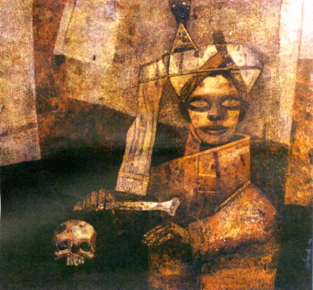

Mar-April 2000 BIBLIO
COVER PAINTING: 'The Magician' by Ganesh Pyne, tempera on canvas, 1991,
from the book
Ganesh Pyne: Revelations
by Geeti Sen and published by Biresh Paul, 14 Gurusaday Road, Calcutta - 700 019
